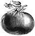
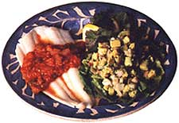
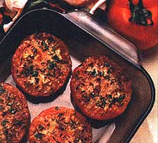

NATURAL HEALTH
If you have a garden out back, you're probably good and ready for some new tomato recipes.
Note to all readers: Okay, we know what you're thinking. MOTHER has published tons of articles on cooking with tomatoes. Can there really be that many recipes that I haven't seen yet? Our answer to you is: As long as gardeners continue to bring in dozens of armloads of tomatoes each year, you can be sure that an abundance of original recipes will crop up as well. We consider it our job to keep you posted.-The Editors
I'll bet you can't describe the smell of a winter store-bought tomato. Don't worry, I can't either. Storebought tomatoes are void of smell (and taste, if you ask me), and without an aroma, how can a food have flavor? That's why I'm counting the minutes until July arrives so that I can sink my teeth into a ripe, juicy-red tomato that smells like a . . . well, a tomato. From that moment on, I'll not let a day pass without consuming at least one tomato a day, picked fresh from our backyard garden.
Although I truly love the tomato season, I must admit that my organic gardener husband tends to become a bit crazy come summer. Like a mad chemist, he obsessively invents chemical-free solutions in an attempt to eliminate garden pests. He and our next-door neighbor, Carl, become partners in crime-spraying bugs with an assortment of solutions containing secret ingredients, such as cayenne pepper and garlic. They then zoom out to their gardens the next morning to count the corpses. If they can't locate dead bug bodies, it's back to the laboratory.
As you all probably know, tomatoes are botanically a fruit (originally called "love apples"), but are usually prepared as a vegetable. Once believed to be poisonous, tomatoes are a member of the nightshade family, which includes potatoes, bell peppers, and eggplants. A tomato is a good lowfat food, containing only 25 calories (one pound of tomatoes equals 90 calories), as well as some vitamin C, potassium, and a substantial amount of vitamin A. Because some vitamins are lost during cooking and canning, tomatoes in concentrated form, such as tomato paste; contain more nutrients.
Tomato Tips
Buying and Storing
When selecting store tomatoes, don't buy the ones from the refrigerator case because temperatures below 55°F destroy the texture and inhibit ripening. Note: Most winter tomatoes that are shipped long distances have been refrigerated, so check with your produce manager. During winter months, if I must buy fresh tomatoes, I prefer Italian plum tomatoes, which tend to have more flavor. When choosing tomatoes, remember that a ripe tomato should be soft but not squishy, and have a pleasant fragrance. Tomatoes can be kept at room temperature, out of direct sunlight to ripen further. For faster ripening, place the tomatoes in a paper bag with a banana. The banana releases ethylene gas which hastens the ripening of nearby fruit. Overripe tomatoes can be used in tomato sauces and salsas.
Preparation
During cooking, tomato skins split and roll up into unpleasant looking slivers. The skins can be left on for flavor if the cooked tomatoes are later being strained through a sieve or food mill. If not, peel them by dipping the tomatoes into boiling water for 20 to 30 seconds, removing them from the water, then peeling. For a roasted flavor, hold a tomato over a gas flame on a skewer until the skin blisters and splits. (Put skewers in the firm stem end for secure hold.) Let cool for a few minutes and peel. When using uncooked tomatoes in salads, salt and salad dressing will draw out the juices, so add the tomatoes at the last minute. Cut tomatoes will lose much of their flavor (and some vitamins) within an hour because they contain a highly volatile aromatic three-hexenal. This is the compound that most clearly says "fresh tomato" to the tongue and is released when the tomato is cut.
Because acid in tomatoes reacts with aluminum and non-stainless steel (result ing in a bitter taste), use cookware with a non-reactive surface such as stainless steel, enamel, or glass.
Freezing
Some like to can tomatoes, but I prefer freezing them because it's so easy. (Italian plum tomatoes are best for freezing.) As for cherry tomatoes, I simmer them whole in a pot for 15 minutes, strain, and then freeze the juice for soups. Frozen tomatoes will turn to mush when they're defrosted so they can only be used for cooking.
To freeze tomatoes, wash and dry them thoroughly. Then cut out the stem portion at the top of the tomato, place them in ziplock freezer bags, label, and freeze. You're best off using these within three to five months.
To remove the skin from frozen tomatoes, run them under cold water for approximately one minute and the skins will practically slip right off. I usually drop the whole tomatoes in the hot soup (or whatever I'm cooking) for two to three minutes. Then remove them from the soup, peel off the skin, and chop.
I'm counting the minutes until Julyarrives so that I can sink my teeth into a ripe, juicy-red tomato.Tomato Salsa
Salsa is great for dipping vegetables or for spreading on grilled fish, chicken, omelets, or tacos. This salsa can be made during winter months using canned tomatoes (plum tomatoes are best) with a little of the canned puree. The winter salsa can be refrigerated for up to two days, but I don't recommend refrigerating fresh tomato salsa.
2 cloves garlic
1 small jalapeño, cayenne, or serrano pepper, seeds removed (use rubber gloves)
1/2 cup fresh cilantro
1/2 medium red onion, cut into large pieces
4 to 5 medium-ripe garden tomatoes, quartered
1/2 green or yellow sweet pepper, (optional) quartered and seeds removed
1 teaspoon cider or wine vinegar
1 tablespoon lemon or lime juice
1/2 teaspoon salt (omit if using canned tomatoes)
1/4teaspoon cumin
1 teaspoon sugar or honey
Mince garlic and hot pepper. Chop cilantro, onion, green pepper, and tomatoes into small pieces; add to garlic and pepper. Stir in rest of the ingredients.
Pasta with Tomatoes,Basil, And Arugula
This is my favorite low-fat summer pasta dish; it takes five minutes to prepare. If you don't have arugula growing in your garden (and why don't you?), use some fresh salad greens or spinach. 2 to 3 ripe garden tomatoes, chopped into 1/2" pieces
2 to 3 cloves garlic, minced
2 tablespoons vinegar, balsamic or cham pagne
1/2 teaspoon sugar salt, ground pepper, pinch of cayenne pepper
4 to 5 leaves fresh basil, washed, patted dry, and cut with scissors
2 to 3 cups arugula, washed, patted dry, and cut with scissors
8 ounces angel-hair pasta or thin spaghetti (1 use whole wheat)
1 tablespoon olive oil
freshly grated Parmesan cheese, or pecorino romano Toss together chopped tomatoes, garlic, vinegar, sugar, spices, and basil. Prepare pasta; drain. Toss with olive oil and arugula. Pour on the tomato mixture and toss again. Serve topped with grated cheese. Serves two (or one very hungry person).
Marinara Sauce
Every kitchen needs a good tomato sauce recipe. They freeze well and use up your overripe and imperfect tomatoes. Below is my Italian stepmother's recipe, which people just rave about. (Makes three cups of sauce.)
3 tablespoons olive oil
1 tablespoon garlic, minced
4 cups fresh tomatoes (Italian plum are best), skinned and coarsely chopped but not drained, or four cups canned plum tomatoes (1 28-ounce can)
1 six-ounce can tomato paste
1 tablespoon dried oregano, crumbled
1 teaspoon dried basil, or 1 stem fresh basil (to be removed later)1 bay leaf
2 teaspoons sugar
1 1/2 teaspoons salt
freshly ground pepper
dash cayenne pepper (option)
In a large pot, heat oil and sauté garlic and onion, stirring constantly. When transparent (but not brown), add tomatoes and rest of ingredients. Bring sauce to a boil. Turn heat very low and simmer uncovered, stirring occasionally, for approximately one hour. The sauce should be thick and smooth when finished. Remove bay leaf and fresh basil. Taste for additional seasoning. Serve over pasta with fresh sautéed vegetables, chicken, or veal or use it for ravioli or lasagna.
Curried Green Tomatoes
Instead of "fried green tomatoes;" here's a lower-fat version: 1 tablespoon olive oil
1 small clove garlic, minced
1 small red onion, sliced into thin circles
1 teaspoon curry powder, or more to taste
pinch of sugar
pinch cayenne pepper
salt and freshly ground pepper to taste
2 teaspoons olive oil
2 large green tomatoes, sliced 1/4-inch thick
cornmeal for coating
1 tablespoon Italian parsley, finely chopped
Heat oil on medium heat in non-stick skillet. Add garlic, onion slices, curry powder, sugar, salt, and pepper. Stir-fry until onion is limp and garlic is golden-not burned. Remove from pan to plate.
Re-heat pan to medium-high heat with two teaspoons olive oil. Dip tomato slices in cornmeal, then sauté immediately on both sides until golden. Serve tomato slices on plate with onion mixture on top. Sprinkle chopped parsley over all.
Broiled Tomatoes
A wonderful low-fat accompaniment for chicken or fish. 2 medium tomatoes, cut in half (don't cut through the stem)
1/4 cup dried bread crumbs
1 tablespoon fresh herbs (basil, oregano)
1/4 cup freshly grated Parmesan cheese
salt and pepper Place tomatoes, cut side up, on a cookie sheet lined with tin foil. Mix together topping and sprinkle on top of each tomato. Broil approximately four to five inches from the flame for approximately five minutes, watching carefully so they don't burn. Cherry Tomato Pasta Salad Cherry tomatoes are the perfect size for salads. Add them at the last minute so they aren't refrigerated. 8 ounces rotini or fusilli spiral pasta (I use whole wheat)
3 large cloves garlic, minced
1/4 cup olive oil
1 tablespoon lemon juice
1 tablespoon balsamic vinegar
teaspoon cayenne pepper (ground)
salt and freshly ground pepper
2 tablespoons Italian parsley, chopped
2 tablespoons fresh mint leaves (or basil), chopped
1 green or yellow sweet pepper, seeded and sliced thin
2 cups cherry tomatoes, halved
1/2 cup feta cheese or mild goat cheese, crumbled Boil water and cook pasta until just done. While pasta's cooking, heat oil and garlic until hot. Stir in vinegar, lemon juice, salt, and both peppers. Put drained pasta in a large bowl, pouring oil mixture over it. Stir in parsley, mint, and sweet peppers. If you're serving immediately, stir in cherry tomatoes and top with crumbled cheese. Otherwise refriger ate salad until serving time, then slice and stir in tomatoes and top with cheese.
P-L-T Sandwich
P is for pancetta, an Italian bacon that's much leaner than regular bacon.
4 slices pancetta, spicy or regular
2 medium tomatoes, sliced garden greens, arugula, spinach, etc., washed and dried
basil mayonnaise (seep. 28)
4 to 6 whole basil leaves
4 thick slices Italian bread
Fry pancetta and pat dry with a paper towel. Lightly toast bread. Spread a thin layer of basil mayonnaise on each slice. Assemble the sandwich, using your choice of greens. Serve immediately. Makes two sandwiches.
|
 |
 |
 |